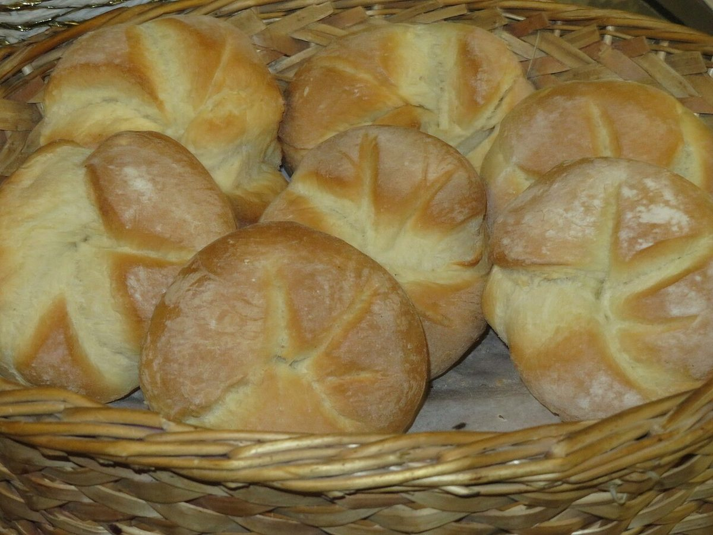
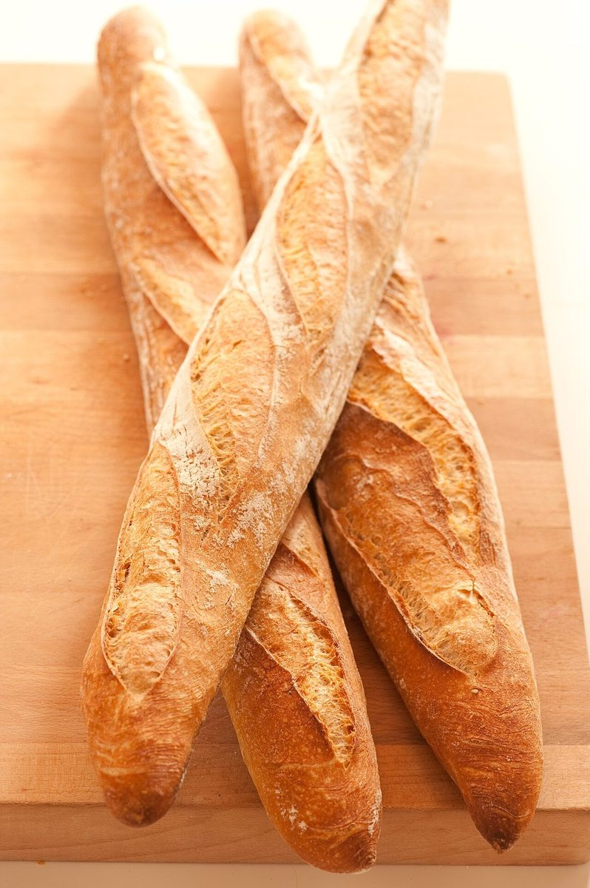
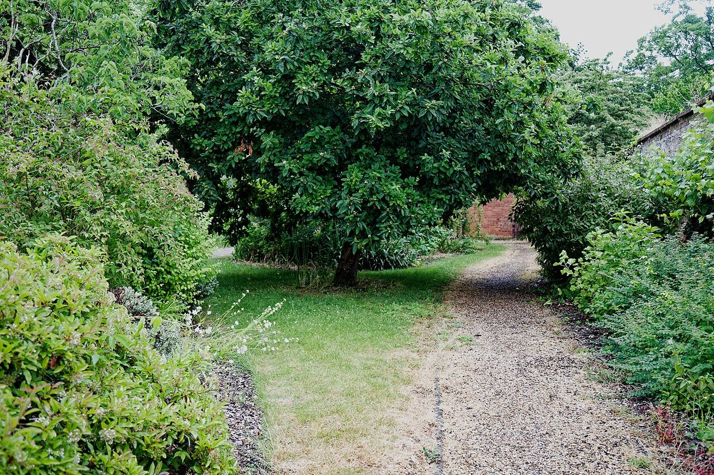

しおり 2ページ目
もちものリスト
お店について確認できているのは、所在地とInstagramのアカウントだけです。チェックが入っているものが確認済み、空の枠は準備中です。
確認チェック
- 店名は「WAKUWAKUパン」、業種はベーカリー
- 所在地は愛知県小牧市藤島町梵天40(〒485-0069)
- Instagramのアカウントがある(pan_oj126)
- 電話番号はなし。連絡はInstagramから
- 営業時間(準備中)
- 定休日(準備中)
- メニュー・価格(準備中)
- ご予約(準備中)
- 駐車場(準備中)
空の枠は、確認でき次第チェックを入れていきます。憶測では書きません。

想像してみる
「WAKUWAKU」という名前から
店名の由来は分かりません。制作側は、名前の響きから、行く前から楽しみになる場所かもしれない、と想像しました。遠足のしおりを開くときのような気分で、お店を知る順番を並べています(実際のお店の姿ではなく、制作側の連想です)。



上の写真はパンのイメージ素材で、国外または撮影地不明のものです。お店の商品ではなく、提供内容を示すものでもありません。
しおりの余白
道と空のスクラップ




いずれも国外または撮影地不明のフリー素材で、お店や小牧市の写真ではありません。